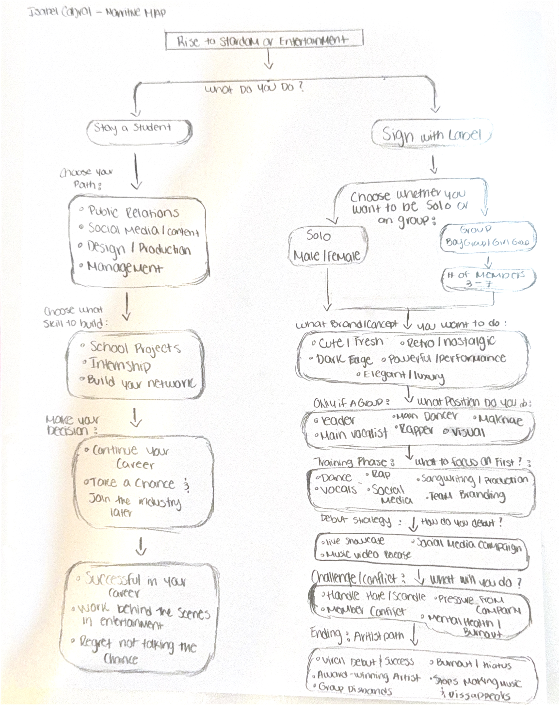

My interactive story explores the choice between becoming a star or working behind the scenes in the entertainment industry. The main character is an aspiring artist and student who has just been scouted by a major entertainment label and offered the opportunity to debut. The story follows the character as they decide whether to take a risk and pursue life as a global sensation or choose a more stable future within an entertainment company. Throughout the experience, the user makes key decisions that shape the character’s journey.
Users can choose to stay in school and develop a career or sign with the label. From academic development to training to debuting and handling fame, pressure, and conflict, each choice leads to different outcomes.
